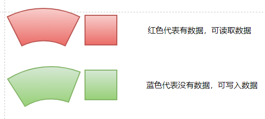
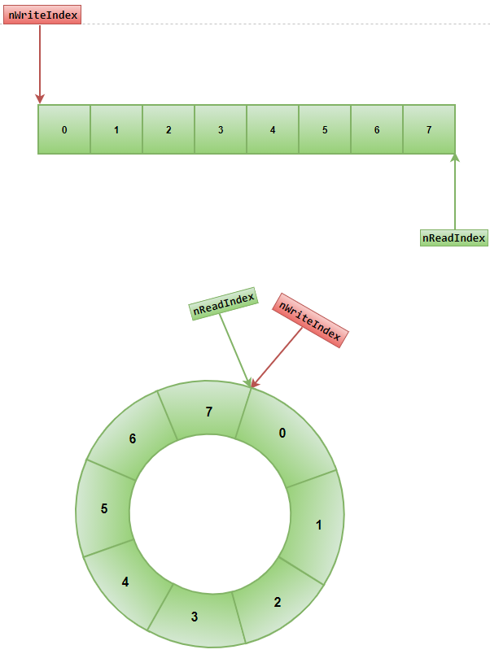
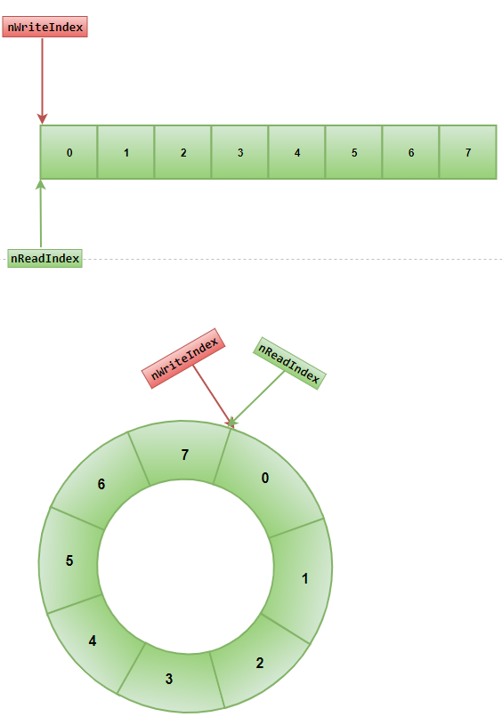
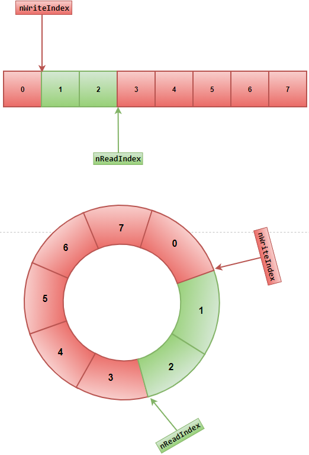
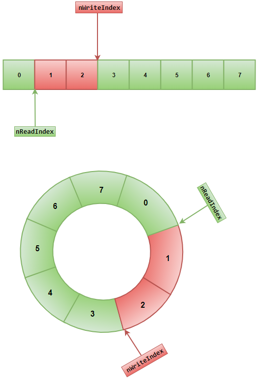
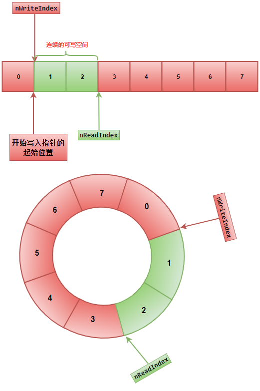
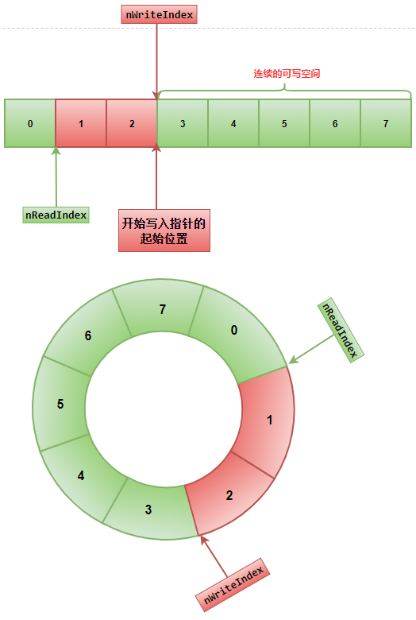
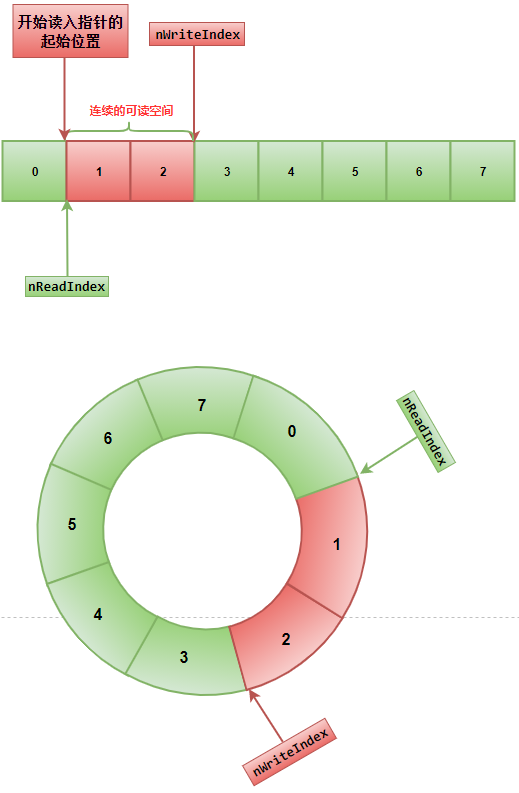
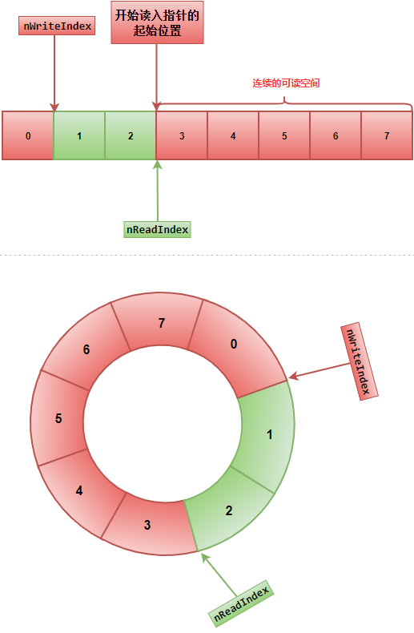

图解释

结构体
typedef struct byteQueue_s
{
char* pBuffer;//数据
size_t nCapacity;//容量
size_t nReadIndex;//读指针索引
size_t nWriteIndex;//写指针索引
} byteQueue_tt;
初始 结构体
假设要申请的空间 环形buff结构体大小为8
nWriteIndex写指针索引nReadIndex读指针索引
环形buff初始化
void byteQueue_init(byteQueue_tt* pByteQueue,size_t nCapacity = /* = 8*/)
{
pByteQueue->nReadIndex = nCapacity;//读指针索引位置设置为8,放到末尾
pByteQueue->nWriteIndex = 0;//写指针索引位置设置成0，放到开头
pByteQueue->nCapacity = nCapacity;//容量
if( nCapacity != 0 )
{
pByteQueue->pBuffer = mem_malloc(nCapacity);//申请空间
}
else
{
pByteQueue->pBuffer = NULL;//置空
}
}

清空结构体
void byteQueue_clear(byteQueue_tt* pByteQueue)
{
pByteQueue->nReadIndex = 0;//读指针索引位置设置为0,放到开头
pByteQueue->nWriteIndex = 0;//写指针索引位置设置为0,放到开头
pByteQueue->nCapacity = 0;//容量设置为0
if(pByteQueue->pBuffer)
{
mem_free(pByteQueue->pBuffer);//如果有数据进行释放
pByteQueue->pBuffer = NULL;//并且置空
}
}

获取剩余全部可写空间
static inline size_t byteQueue_getBytesWritable(byteQueue_tt* pByteQueue)
{
if (pByteQueue->nReadIndex >= pByteQueue->nWriteIndex )//写指针和读指针重合，或者在读指针前面
{
return pByteQueue->nReadIndex - pByteQueue->nWriteIndex;//直接读指针 - 写指针 就是 写入了多少内容
}
else//写指针在读指针后面
{
return pByteQueue->nReadIndex + (pByteQueue->nCapacity - pByteQueue->nWriteIndex); //读指针位置 + (容量 - 写指针位置)
}
}
写指针在读指针前面[求得是蓝色块数据]

写指针在读指针后面[求得是蓝色块数据]
获取剩余全部可读空间
static inline size_t byteQueue_getBytesReadable(byteQueue_tt* pByteQueue)
{
if(pByteQueue->nWriteIndex > pByteQueue->nReadIndex) //读指针在写指针前面
{
return pByteQueue->nWriteIndex - pByteQueue->nReadIndex;//直接写指针 - 读指针 就是可以读多少数据
}
else //读指针和写指针重合,或者读指针在写指针后面
{
return pByteQueue->nWriteIndex + (pByteQueue->nCapacity - pByteQueue->nReadIndex); //写指针 + (容量 - 读指针位置)
}
}
写指针在读指针后面[求的是红色块的数据]

写指针在读指针前面[求的是红色块的数据]

查看连续的可写空间
//查看连续的可写空间
//size_t* pWriteBytes 能连续写入的大小
static inline char* byteQueue_peekContiguousBytesWrite(byteQueue_tt* pByteQueue, size_t* pWriteBytes)
{
if (pByteQueue->nReadIndex >= pByteQueue->nWriteIndex)//读指针在写指针后面
{
*pWriteBytes = pByteQueue->nReadIndex - pByteQueue->nWriteIndex;//能连续写入的大小
}
else//读指针在写指针前面
{
*pWriteBytes = pByteQueue->nCapacity - pByteQueue->nWriteIndex;//能连续写入的大小
}
return pByteQueue->pBuffer + pByteQueue->nWriteIndex;//开始连续写入指针的起始位置
}
写指针在读指针前面[求得连续可写的空间]

写指针在读指针后面[求得连续可写的空间]

查看连续可读空间
//查看连续的可读空间
//size_t* pWriteBytes 能连续读取的大小
static inline char* byteQueue_peekContiguousBytesRead(byteQueue_tt* pByteQueue, size_t* pReadBytes)
{
if(pByteQueue->nWriteIndex > pByteQueue->nReadIndex)//写指针在读指针后面
{
*pReadBytes = pByteQueue->nWriteIndex - pByteQueue->nReadIndex;//能连续读取的大小
}
else
{
*pReadBytes = pByteQueue->nCapacity - pByteQueue->nReadIndex;//能连续读取的大小
}
return pByteQueue->pBuffer + pByteQueue->nReadIndex;//开始连续读入指针的起始位置
}
写指针在读指针后面[求得连续可读的空间]

写指针在读指针前面[求得连续可读的空间]

写入一个字符[空间不足按256的倍数自动扩展]
void byteQueue_writeChar(byteQueue_tt* pByteQueue, const char c)
{
if(pByteQueue->nCapacity == 0)
{
//初始化容量,buffer大小，可读索引
pByteQueue->nCapacity = 256;//初始化容量大小[256]
pByteQueue->pBuffer = mem_malloc(pByteQueue->nCapacity);//申请空间
pByteQueue->nReadIndex = pByteQueue->nCapacity;//初始化读索引位置
}
else
{
size_t nBytesWritable = byteQueue_getBytesWritable(pByteQueue);//获取获取剩余全部可写空间
if (1 > nBytesWritable)
{
//align_size 将size按align大小整数倍提升,用于内存对齐
size_t nNewCapacity = align_size( (pByteQueue->nCapacity << 1) + 1,256);
char* pBuffer = mem_malloc(nNewCapacity);
if(pByteQueue->nReadIndex != pByteQueue->nCapacity)//说明还有数据没有读走
{
size_t nWritten = byteQueue_getBytesReadable(pByteQueue);//获取剩余全部可读的空间
size_t nReadBytes = 0;//连续可读的空间的大小
char* pRead = byteQueue_peekContiguousBytesRead(pByteQueue, &nReadBytes);//开始读取数据的起始位置
memcpy(pBuffer,pRead,nReadBytes);//直接拷贝
if( nReadBytes != nWritten )//如果连续可读的空间的大小!=剩余全部可读的空间
{
memcpy(pBuffer+ nReadBytes,pByteQueue->pBuffer,nWritten - nReadBytes);//把剩下的可读的空间写入新buffer空间
}
pByteQueue->nReadIndex = 0;//到了新空间需要重新移动读指针
pByteQueue->nWriteIndex = nWritten;//到了新空间需要重新移动写指针
}
else //没有数据需要读取直接初始化指针位置
{
pByteQueue->nReadIndex = nNewCapacity;
pByteQueue->nWriteIndex = 0;
}
pByteQueue->nCapacity = nNewCapacity;
mem_free(pByteQueue->pBuffer);
pByteQueue->pBuffer = pBuffer;
}
}
pByteQueue->pBuffer[pByteQueue->nWriteIndex] = c;//赋值
pByteQueue->nWriteIndex = (pByteQueue->nWriteIndex + 1) % pByteQueue->nCapacity;//索引位移一位
if (pByteQueue->nReadIndex == pByteQueue->nCapacity)//如果读索引在尾部
{
pByteQueue->nReadIndex = 0;//把读索引放到头部
}
}
写入指定大小空间的数据[空间不足按256的倍数自动扩展]
void byteQueue_write(byteQueue_tt* pByteQueue, const void* pInBytes, size_t nLength)
{
assert(nLength != 0);
if(pByteQueue->nCapacity == 0)//容量大小为0
{
pByteQueue->nCapacity = align_size(nLength,256);//初始化容量大小[256的倍数]
pByteQueue->pBuffer = mem_malloc(pByteQueue->nCapacity);//申请空间
pByteQueue->nReadIndex = pByteQueue->nCapacity;//初始化读索引位置
}
else
{
size_t nBytesWritable = byteQueue_getBytesWritable(pByteQueue);//获取剩余可写空间
if (nLength > nBytesWritable)//如果写入的大小大于剩余可写空间
{
//数据进行扩展
size_t nNewCapacity = align_size( (pByteQueue->nCapacity << 1) + (nLength-nBytesWritable),256);
char* pBuffer = mem_malloc(nNewCapacity);//申请空间大小
if(pByteQueue->nReadIndex != pByteQueue->nCapacity )//还有数据可读
{
size_t nWritten = byteQueue_getBytesReadable(pByteQueue);//剩余全部可读空间
size_t nReadBytes = 0;//连续可读的空间大小
char* pRead = byteQueue_peekContiguousBytesRead(pByteQueue, &nReadBytes);//开始连续读入指针的起始位置
memcpy(pBuffer,pRead,nReadBytes);//把连续可读的空间写入新buffer空间
if( nReadBytes != nWritten )//如果连续可读的空间!=剩余全部可读空间
{
memcpy(pBuffer + nReadBytes,pByteQueue->pBuffer,nWritten - nReadBytes);//把剩下的可读的空间写入新buffer空间
}
pByteQueue->nReadIndex = 0;//重置读索引
pByteQueue->nWriteIndex = nWritten;//重置写索引
}
else
{
pByteQueue->nReadIndex = nNewCapacity;//重置读索引
pByteQueue->nWriteIndex = 0;//重置写索引
}
pByteQueue->nCapacity = nNewCapacity;////重置容量大小
mem_free(pByteQueue->pBuffer);//释放旧buff空间
pByteQueue->pBuffer = pBuffer;//重置指针到新buff空间
}
}
size_t nWriteBytes = 0;//连续可写的空间大小
char* pWrite = byteQueue_peekContiguousBytesWrite(pByteQueue,&nWriteBytes);//开始写入的指针位置
if (nWriteBytes >= nLength)//如果连续写入的空间能够满足需要写入的空间大小
{
memcpy(pWrite, pInBytes, nLength);//直接拷贝
}
else
{
memcpy(pWrite, pInBytes, nWriteBytes);//先拷贝连续可写入的空间大小
memcpy(pByteQueue->pBuffer, (const char*)pInBytes + nWriteBytes, nLength - nWriteBytes);//再把剩余要写入的大小空间写入
}
pByteQueue->nWriteIndex = (pByteQueue->nWriteIndex + nLength) % pByteQueue->nCapacity;//重置读索引
if (pByteQueue->nReadIndex == pByteQueue->nCapacity)
{
pByteQueue->nReadIndex = 0;//重置写索引
}
}
写入指定大小空间的数据[空间不足按剩余需要空间大小申请]
void byteQueue_writeBytes(byteQueue_tt* pByteQueue, const void* pInBytes, size_t nLength)
{
assert(nLength != 0);
if(pByteQueue->nCapacity == 0)//容量大小为0
{
pByteQueue->nCapacity = nLength;//初始化容量大小[需要空间大小]
pByteQueue->pBuffer = mem_malloc(pByteQueue->nCapacity);//申请空间
pByteQueue->nReadIndex = pByteQueue->nCapacity;//初始化读索引位置
}
else
{
size_t nBytesWritable = byteQueue_getBytesWritable(pByteQueue);//剩余可写的全部空间大小
if (nLength > nBytesWritable)//如果写入的大小大于剩余可写入的空间大小
{
size_t nNewCapacity = pByteQueue->nCapacity + (nLength - nBytesWritable);//开辟正好大小的空间
char* pBuffer = mem_malloc(nNewCapacity);//申请空间
if(pByteQueue->nReadIndex != pByteQueue->nCapacity)//还有空间可读需要把这段空间赋值到新空间
{
size_t nWritten = byteQueue_getBytesReadable(pByteQueue);//剩余可读的全部空间
size_t nReadBytes = 0;//连续可读的空间
char* pRead = byteQueue_peekContiguousBytesRead(pByteQueue, &nReadBytes);//开始读取空间的起始位置
memcpy(pBuffer,pRead,nReadBytes);//拷贝到新空间
if( nReadBytes != nWritten )//连续可读的空间!=剩余可读的全部空间
{
memcpy(pBuffer+ nReadBytes,pByteQueue->pBuffer,nWritten - nReadBytes);//拷贝剩余数据到新空间
}
pByteQueue->nReadIndex = 0;//重置读索引
pByteQueue->nWriteIndex = nWritten;//重置写索引
}
else
{
pByteQueue->nReadIndex = nNewCapacity;//重置读索引
pByteQueue->nWriteIndex = 0;//重置写索引
}
pByteQueue->nCapacity = nNewCapacity;//重置容量
mem_free(pByteQueue->pBuffer);//释放旧空间
pByteQueue->pBuffer = pBuffer;//新空间指针指向旧空间指针
}
}
size_t nWriteBytes = 0;//连续可写入空间大小
char* pWrite = byteQueue_peekContiguousBytesWrite(pByteQueue,&nWriteBytes);//可写入开始指针
if (nWriteBytes >= nLength)//容量足够
{
memcpy(pWrite, pInBytes, nLength);//直接拷贝
}
else
{
memcpy(pWrite, pInBytes, nWriteBytes);//先拷贝连续可写入空间大小
memcpy(pByteQueue->pBuffer, (const char*)pInBytes + nWriteBytes, nLength - nWriteBytes);//剩余的在直接拷贝
}
pByteQueue->nWriteIndex = (pByteQueue->nWriteIndex + nLength) % pByteQueue->nCapacity;//重置写索引
if (pByteQueue->nReadIndex == pByteQueue->nCapacity)
{
pByteQueue->nReadIndex = 0;//重置读索引
}
}
读取数据
bool byteQueue_readBytes(byteQueue_tt* pByteQueue, void* pOutBytes, size_t nMaxLengthToRead, bool bPeek /*= false*/ )
{
size_t nBytesWritten = byteQueue_getBytesReadable(pByteQueue);//可读的空间大小
size_t nBytesToRead = nBytesWritten < nMaxLengthToRead ? nBytesWritten : nMaxLengthToRead;//得到可读取的大小
if (nBytesToRead == 0)
{
return false;
}
size_t nReadBytes = 0;//连续可读的大小
char* pRead = byteQueue_peekContiguousBytesRead(pByteQueue, &nReadBytes);//连续可读空间大小的起始索引
if( nReadBytes >= nBytesToRead )//满足可读大小需求
{
memcpy(pOutBytes,pRead,nBytesToRead);//直接读取
}
else
{
memcpy(pOutBytes,pRead,nReadBytes);//直接连续可读的空间大小
memcpy((char*)pOutBytes+nReadBytes,pByteQueue->pBuffer,nBytesToRead-nReadBytes);//读取剩余需要读取的大小
}
if (!bPeek)//不是探测
byteQueue_readOffset(pByteQueue,nBytesToRead);//直接移动指针
return true;
}
重置容量
void byteQueue_reserve(byteQueue_tt* pByteQueue, size_t nCapacity)
{
size_t nWritten = byteQueue_getBytesReadable(pByteQueue);//剩余全部可读大小
if(nWritten > nCapacity)//如果全部可读的大小大于要重置的容量大小
{
return;
}
if(pByteQueue->nReadIndex != pByteQueue->nCapacity)//有剩余需要读取的空间数据
{
char* pBuffer = mem_malloc(nCapacity);//申请新的重置空间大小
size_t nReadBytes = 0;//连续可读的空间大小
char* pRead = byteQueue_peekContiguousBytesRead(pByteQueue, &nReadBytes);//连续可读空间大小的起始位置
memcpy(pBuffer,pRead,nReadBytes);//直接拷贝
if( nReadBytes != nWritten )//还有剩余要拷贝的空间
{
memcpy(pBuffer + nReadBytes,pByteQueue->pBuffer,nWritten - nReadBytes);//拷贝剩余要拷贝的数据
}
pByteQueue->nReadIndex = 0;//重置读索引
pByteQueue->nWriteIndex = nWritten;//重置写索引
mem_free(pByteQueue->pBuffer);//释放旧空间
pByteQueue->pBuffer = pBuffer;//新空间的指针指向旧空间指针
}
else
{
pByteQueue->pBuffer = mem_realloc(pByteQueue->pBuffer,nCapacity);//直接指向申请空间的大小
pByteQueue->nReadIndex = nCapacity;//重置读索引
pByteQueue->nWriteIndex = 0;//重置写索引
}
pByteQueue->nCapacity = nCapacity;//重置容量
}